01
Hをそのままハシゴへ
候補Hの二本の縦画と横画を母形に、ハシゴを直接連想する5案を作った。
判断Hとハシゴがあからさまで、企業固有の物語より記号の説明が先に立つ。
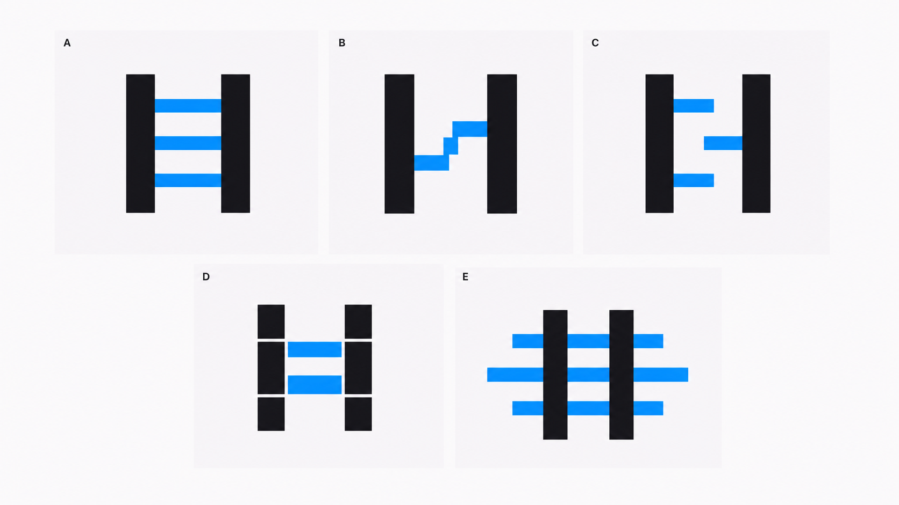
Motif exploration · 2026.07.21
H-Jの骨格から始め、橋渡し・共創・成長を一つの単色マークへ圧縮した過程です。生成案へのフィードバックで判断が変わった箇所を、画像と理由の組で保存します。
位置づけ： 掲載画像はOpenAI Imagegenによる比較用ラスタ画像で、承認済みロゴ資産ではありません。画像内のワードマークはH-Jを参照した近似です。現在案の黄金比、曲線、重心は構図検討段階であり、採用後にSVGで数値再構築・小サイズ検証を行います。
Current provisional direction
06R-1Aの推進感と大小差へ、06R-1Bの安定した重心設計を統合した現時点の暫定方向です。
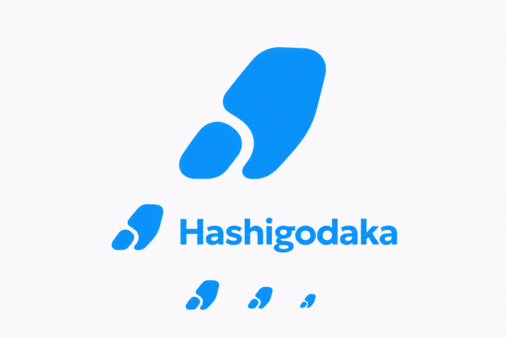
候補Hの二本の縦画と横画を母形に、ハシゴを直接連想する5案を作った。

Hの完成形を描かず、二本の軸、横方向の接続、上昇する間隔だけを残した。
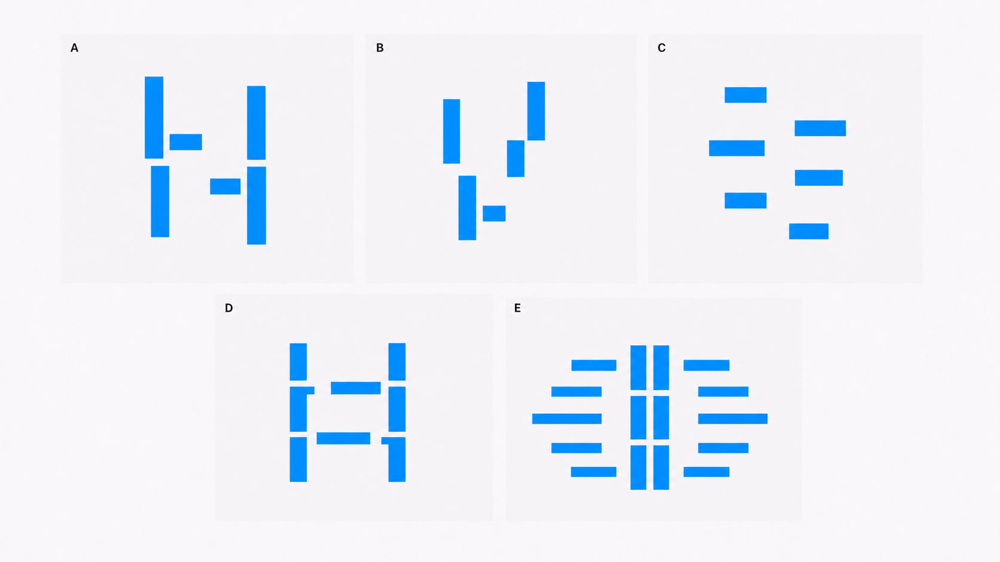
負形、一本の帯、回転、重なり、密度変化など10種類の原理へ広げた。
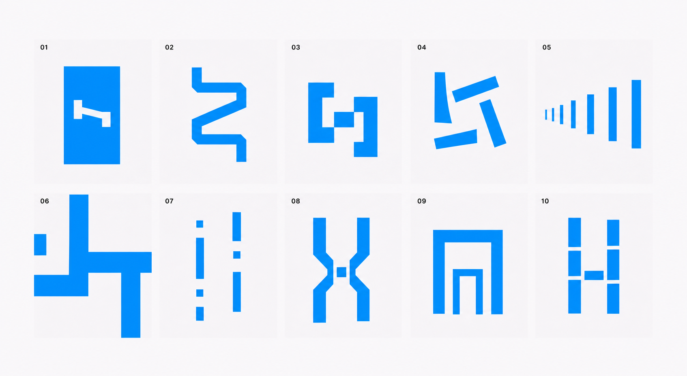
ブランド思想から、橋渡し、共創、成長をモチーフの中心語として選んだ。
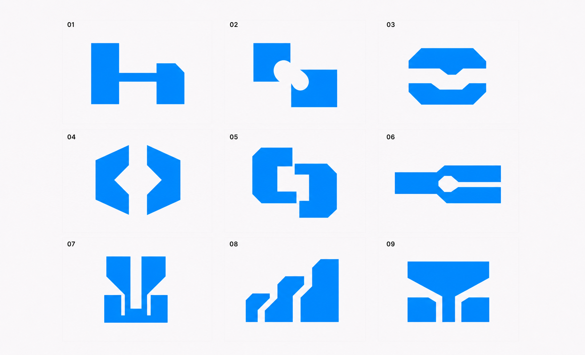
離れた二者、共有する接点、接続後の広がりを一つの静止形へ組み込んだ。
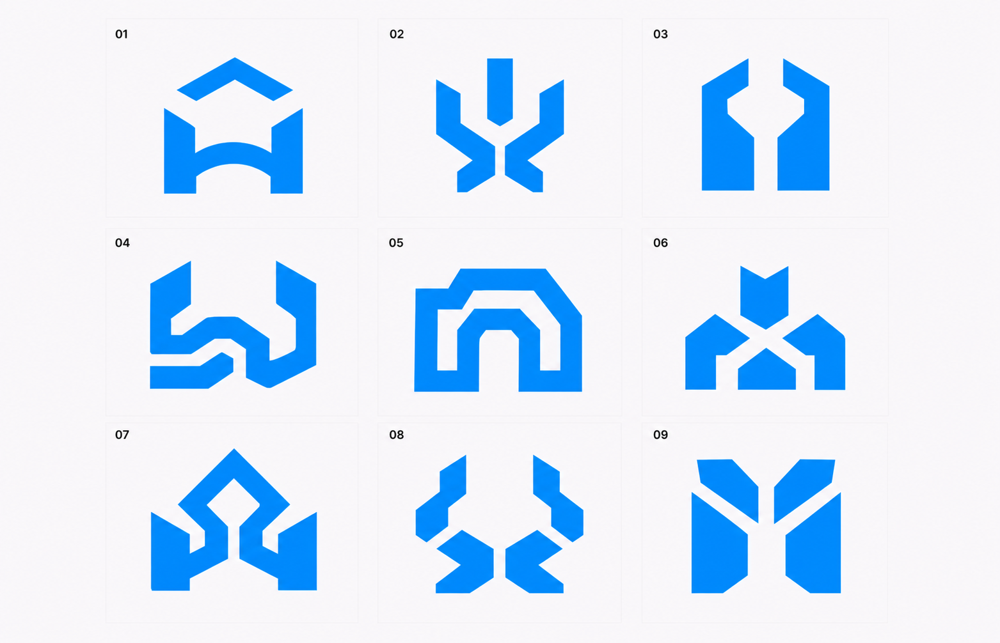
蝶、植物、羽根に見える形を、避けるノイズではなく意味を担う候補として再評価した。
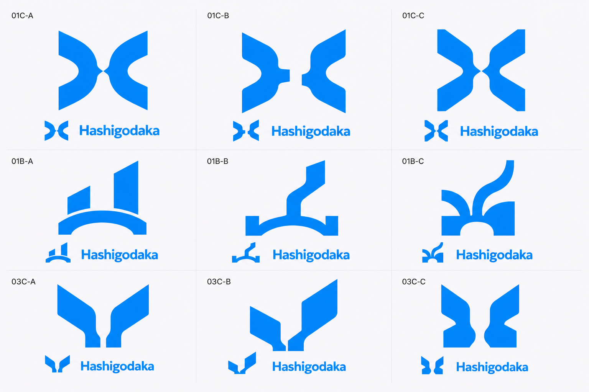
三語を同じ強度で読ませるため、接点、共有成果、羽根や成長部を追加した。
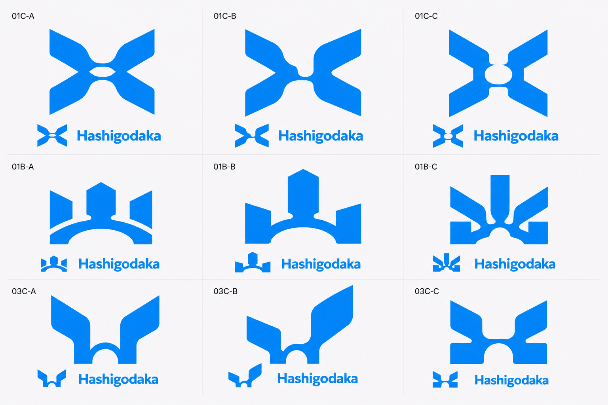
最大2形状、接続1か所、曲線1系統、負形1か所以内へ制限した。
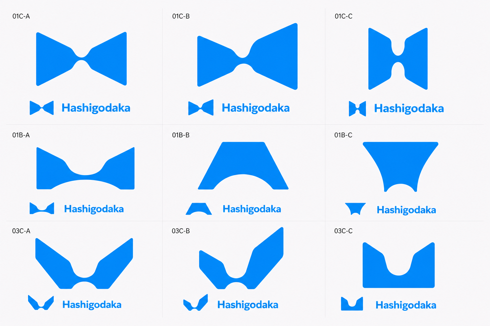
負形、斜め構成、一本の帯、非対称などへ再び発散し、06の造形が選ばれた。
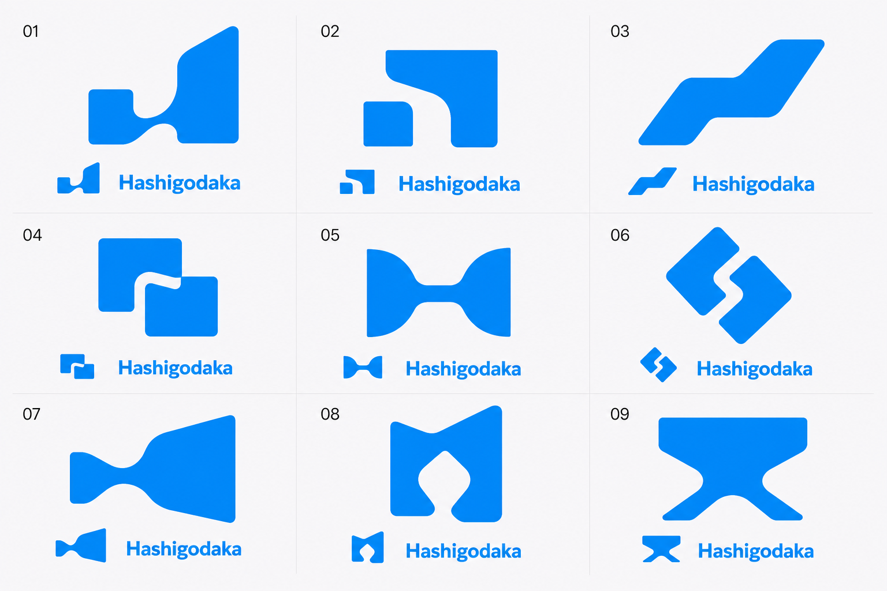
二形状の大小、傾き、中央曲線、安定性を変えた6案を比較した。
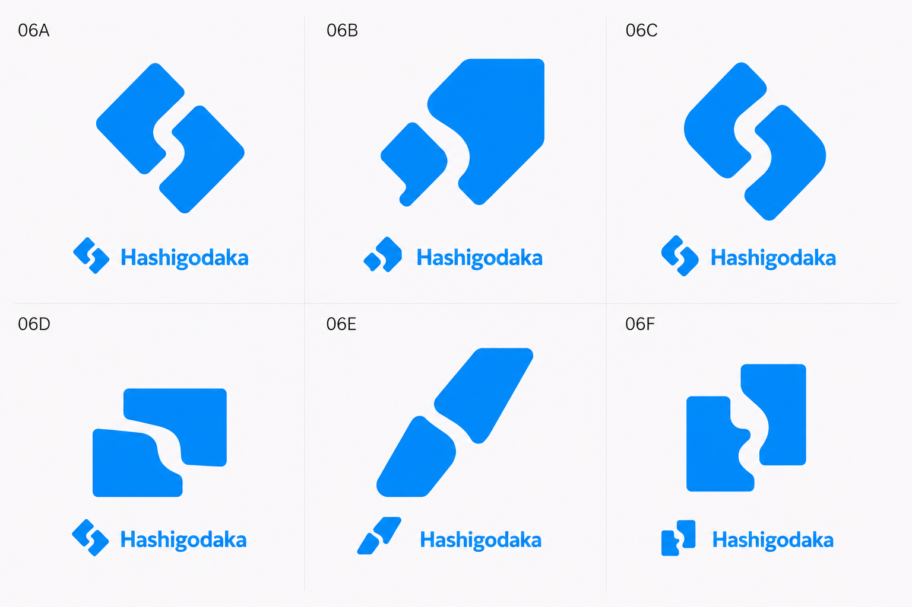
小形状と大形状の比率、距離、角度を変え、バタフライエフェクトの物語を強めた。
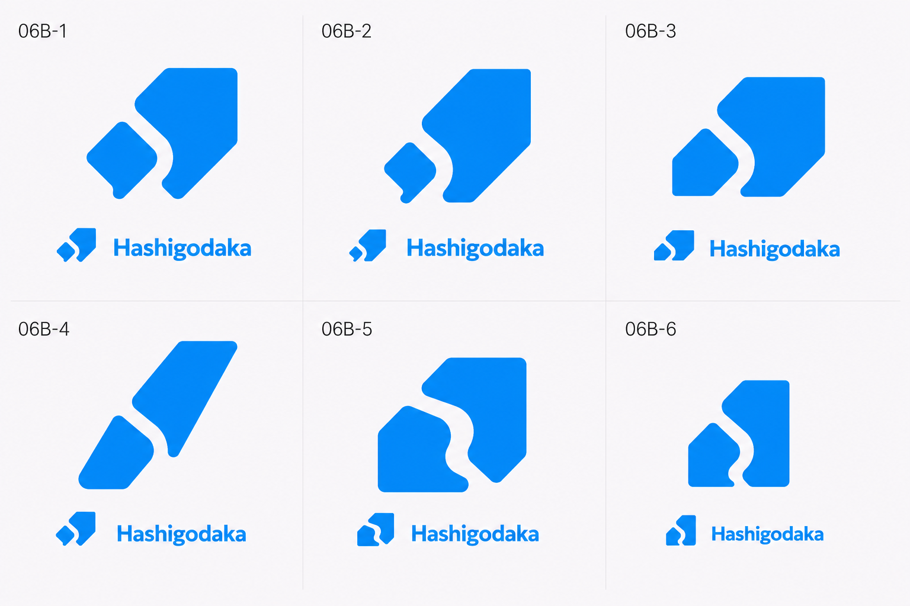
大小差、右上方向、先端形状から生じるロケットの印象を再評価した。
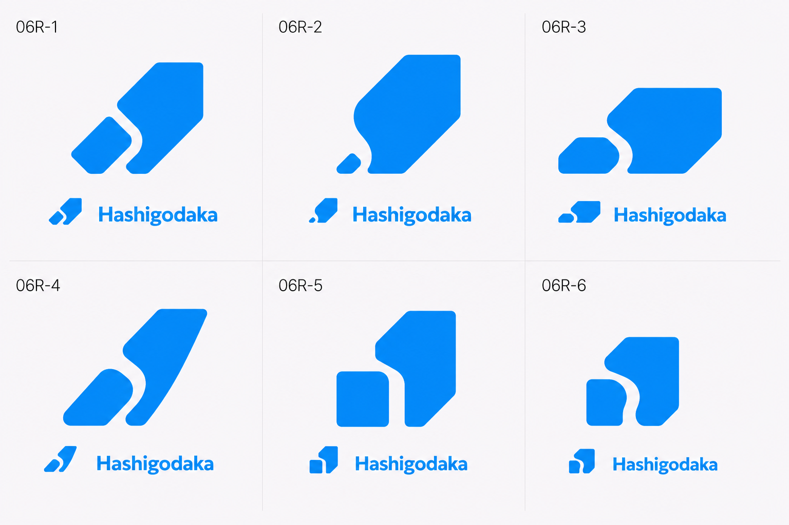
感覚的な大小比と斜めの切断面を見直し、安定性と有機性を比較した。
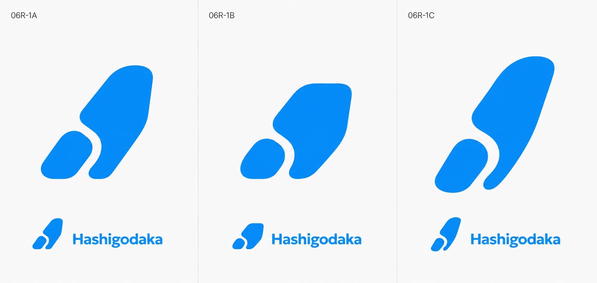
06R-1Aの傾きと物語へ、06R-1Bの重心設計とコンパクトさを取り込んだ。